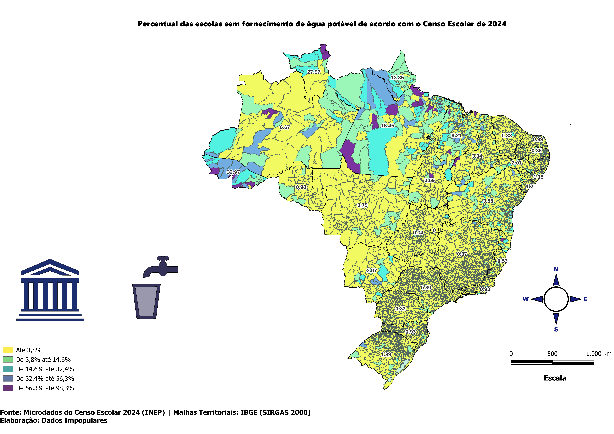
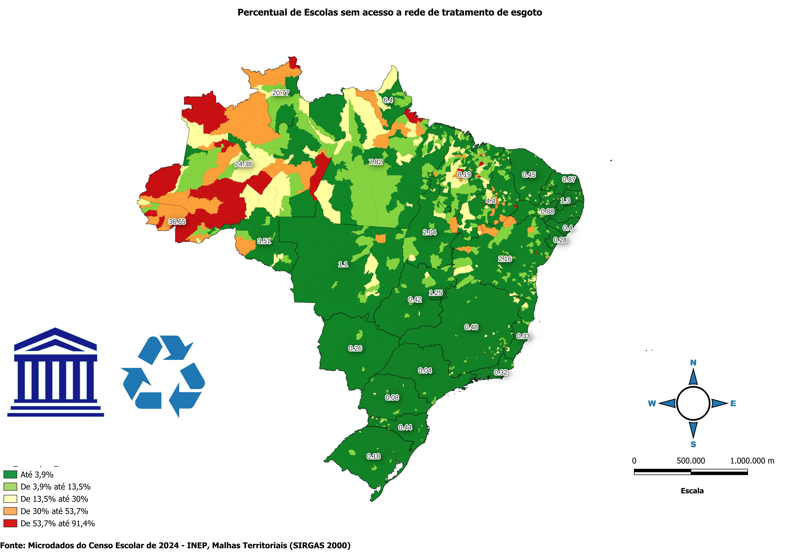
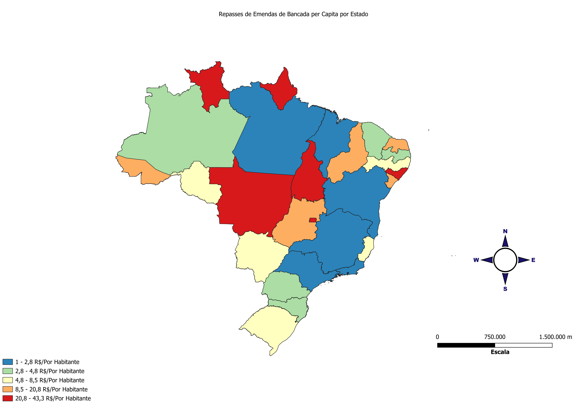

Últimas Publicações de Dados Impopulares nas Redes Sociais
Percentual de Escolas sem Abastecimento de Água
Sobre os dados
Desafios da Educação do Brasil: O Abastecimento de água Potável - 💔 Sem água, sem futuro: o desafio das escolas brasileiras
Enquanto algumas regiões têm quase todas as escolas com água potável (menos de 3,8%), outras enfrentam cenários críticos – em certas áreas, 98,3% das escolas não têm acesso a esse recurso básico.
Como podemos falar em educação de qualidade sem garantir o mínimo?
Fonte: Censo Escolar de 2024 - INEP | Ver no Instagram
Percentual de Escolas sem Abastecimento de ligação com a rede de esgoto
Sobre os dados
📊 Percentual de Escolas sem Acesso à Rede de Esgoto em 2024 Os dados revelam as desigualdades no acesso ao saneamento básico nas escolas brasileiras. Enquanto algumas regiões apresentam menos de 3,9% das escolas sem esgoto, outras chegam a alarmantes 91,4%. 💧 Saneamento é direito básico e essencial para a educação de qualidade!
Fonte: Censo Escolar de 2024 - INEP | Ver no Instagram
Emenda de Comissão de Bancada Per Capita
Sobre os dados
Sabe quanto a seu Estado recebeu de emendas parlamentares por habitante em 2024? 🧐💸 Os repasses de emendas de bancada variam MUITO entre os estados! 🗺️ Usando dados oficiais do Portal da Transparência (CGU) e projeções do IBGE (2024), calculamos o valor per capita (por habitante) desses recursos. O que são emendas de bancada? São recursos negociados coletivamente pela bancada de deputados/senadores de cada estado para investimentos em saúde, educação, infraestrutura e outros projetos locais. 💡 Por que o valor per capita importa? Ele revela se o repasse é equilibrado com o tamanho da população. Um valor alto pode indicar maior influência política ou necessidades urgentes; um valor baixo, menor prioridade no Orçamento.
Fonte: Portal da Transparência - CGU | Estimativas Populacionais de 2024 - IBGE Ver no Instagram